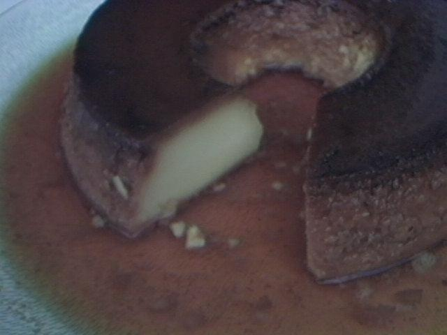

Texto normal
Texto negrito
Texto italico
Texto Sublinhado
Texto Taxado
Texto maior
Texto menor
Texto subscrito
Texto sobrescrito
Texto monoespaçado
Texto marcado

Ingredientes
Para o pudim
1 lata de leite condensado
1 lata de leite, usando a lata de leite condensado como medida
3 ovos inteiros
Para a calda de caramelo
1 xícara (chá) de açúcar
1/2 xícara de água
Modo de preparo
Prepare a mistura do pudim
Coloque os ovos no liquidificador e bata bem. Em seguida, acrescente o leite condensado e o leite. Bata novamente até obter uma mistura uniforme.
Prepare a calda
Coloque o açúcar em uma panela e leve ao fogo médio. Deixe derreter até formar um caramelo dourado. Acrescente a água com cuidado e deixe cozinhar até que o caramelo fique novamente bem dissolvido e com uma consistência adequada para cobrir a forma.
Uma dica da família:
tenha um pouco de paciência com a calda. Depois que a água é adicionada, o açúcar caramelizado pode endurecer por alguns instantes. Continue aquecendo e mexendo com cuidado até que ele volte a ficar líquido e uniforme.
Prepare a forma
Espalhe a calda de caramelo por toda a parte interna de uma forma própria para pudim.
Coloque a mistura
Despeje cuidadosamente a mistura do pudim dentro da forma caramelizada.
Prepare o banho-maria
Coloque a forma do pudim dentro de uma assadeira maior. Adicione água quente na assadeira, ao redor da forma, até formar o banho-maria.
O segredo do banho-maria:
a água deve ficar ao redor da forma do pudim, ajudando o cozimento a acontecer de maneira mais suave e uniforme. Se necessário, durante o preparo, complete a água com cuidado para que o banho-maria não fique seco.
Leve ao forno
Leve ao forno preaquecido a 180 °C e asse por aproximadamente 45 minutos, ou até que o pudim esteja firme.
Confira o ponto
Para verificar se está pronto, espete cuidadosamente um garfo ou palito no centro do pudim. Ele deve sair relativamente limpo e a sobremesa deve estar firme, mas ainda com uma leve tremidinha no centro.
Deixe esfriar e desenforme
Retire o pudim do forno e deixe esfriar completamente. Depois, leve à geladeira para ficar bem gelado. Quando estiver frio, passe delicadamente uma faca nas laterais da forma e desenforme sobre um prato de sobremesa.
Um toque especial da família: pudim é uma daquelas sobremesas que ficam ainda melhores quando preparadas com antecedência. Se puder, deixe-o algumas horas na geladeira antes de servir. Assim ele fica bem geladinho, mais firme e com a calda espalhada por toda a sobremesa.
Aqui é um parágrafo
GOOGLE